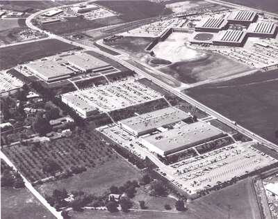

Silicon Valley
Silicon Valley is an area in the state of California known worldwide as the center of technology and innovation. The region has had a huge impact on the development of the modern technological world.
1938-1950
The Beginning
Silicon Valley first gained prominence in the late 1930s and early 1940s. Around this time, companies like Hewlett-Packard (HP) and Stanford University began to grow in the Silicon Valley region. During World War II, Silicon Valley was a crucial hub of innovation, particularly for military purposes.
1950-1960
The Rise of
the Semiconductor Industry
In the 1950s and 60s, the semiconductor industry saw significant growth, with companies like Fairchild Semiconductor. This period marked the beginning of the electronic revolution, which later formed the foundation for the computer and information technology sector.
1970-1980
Personal Computer
In the 1970s and 80s, the rise of the personal computer (PC) took place, with Silicon Valley playing a crucial role in its development through companies like Apple, Microsoft, and IBM. This innovation changed the way people work and communicate.
1990-2000
Internet
In the 1990s, the rise of the internet occurred, and Silicon Valley was one of the key regions in developing it, with companies including Google, Amazon, and Yahoo.
2000-2010
Social Media and
the Mobile Revolution
The emergence of social media (Facebook, Twitter, Instagram, WhatsApp) and mobile technology (such as the iPhone) once again changed the way people communicate and work. These companies originated in Silicon Valley and have shaped the world as we know it.

2010-heden
Artificial Intelligence and
Biotechnology
Silicon Valley continues to play a leading role in emerging technologies such as artificial intelligence (AI), biotechnology, and self-driving cars, with companies like Tesla, SpaceX, and several AI startups.